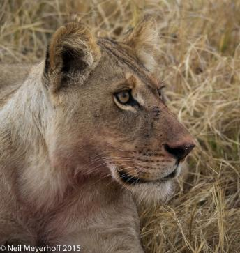
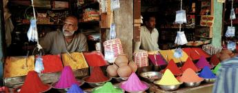

%1
This flower seller is stringing necklaces of flowers to be worn by visitors to the nearby Sri Meenakshi temple. This vertical panoramic photograph was taken in Madurai, Tamil Nadu, India with a Hasselblad X-pan camera. Click image to enlarge. |
|||
This panoramic view of Split from the west shows the Riva, the promenade that fronts on the water and provides Split with its cafe sitting and people watching area. Split is a major tourist location along the central Dalmatian coast of Croatia.  Click image to enlarge. |
|||
American flag in sidewalk garden, Broad Channel, Queens. Panasonic DMC-LX3, 5.1mm,1/800@f7.1  Click image to enlarge. |
|||
This chateau is a 20th century recreation on the remains of some farm buildings on the grounds of a 16th century chateau. The chateau was destroyed during the French revolution, and in the first century of the 20th century, Alfred Klotz, a portrait painter from Baltimore, Maryland, came upon the site and made it his life's work, other than painting, to recreate this chateau from stones and architectural elements found throughout the province of Brittany, in western France, where this chateau is located. Click image to enlarge. |
|||
This local villager has had too much to drink, and has fallen down on the ground. His wife, with her hands on her face, is unsure what to do. The young people sitting and standing around the stone column are college students from Quito who have driven to the hacienda to drink beer (see yellow cases at their feet) and watch the celebration. The other person taking a photo of the drunken man is my wife. Olympus OMD EM-5, 12mm, 1/400@5.6  Click image to enlarge. |
|||
After journey up the Chin River from Mrauk U, we stopped at a village to see and photograph women whose faces were completely covered in tattooed lines. I also walked into another part of the village and saw this woman sifting rice from the husks by throwing the rice up out of the basket, the husks falling through the bottom of the basket. I used a slow shutter speed, 1/40th of a second to show the rice in motion, but still kept the woman's face relatively unblurred. It took about 10 shots to get the image I wanted.  Click image to enlarge. |
|||
Jemma el Fna is said to be the greatest public square in Africa, and at night the locals and tourists come to eat at the many food establishments that set up after 4PM each day. During the day the square is filled with snake charmers, fortune tellers, and other hucksters. This four shot panoramic, stitched in Photoshop CC, was taken from a rooftop cafe using a tripod. The cafe requires each patron to buy one soft drink, for about $2.50 in order to gain access to the terrace. Olympus OMD EM-1, ISO 200, 17mm, 2 seconds @f10  Click image to enlarge. |
|||
Located right next to the presidential palace the buildings along Chatham street were neglected during the civil war, and are now just being restored as chic boutiques and offices. With the election of a new, non-military president, in February 2015, the barricades surrounding this street have been removed allowing people to walk around this area. Olympus OMD EM-1, 1/8@f3.5, 12mm, ISO 640  Click image to enlarge. |
|||
This lioness has just finished eating a small animal, thus resulting in a bloody mouth. We did not arrive on the scene in time to see the kill or the lioness eating the animal. Okavango Delta. Olympus OMD, EM-1, 1/200@f6.7, 300mm, ISO1000 Click image to enlarge. |
|||
These two dye sellers are in the market near the Sri Meenakshi temple in Madurai, Tamil Nadu, India. As is many places throughout the world, sellers of similar items set up shop next to or near each other, knowing that the customers know where a particular item will be available. The panoramic photograph was taken with a Hasselblad X-pan camera. Click image to enlarge. |
|||